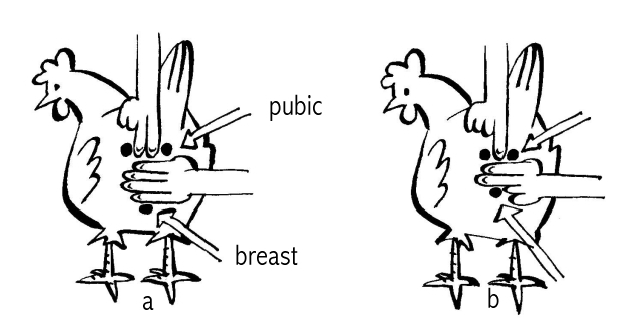

ການປັບປຸງພັນ
- ການເລືອກລ້ຽງໄກ່ທີ່ມີສຸຂະພາບດີ ແລະ ແຂງແຮງດີຢູ່ໃນບ້ານ ຫຼື ຕະຫຼາດແມ່ນມີຄວາມສຳຄັນ, ຖ້າຕ້ອງການຮັບປະກັນໃຫ້ມີສຸຂະພາບດີ ແລະ ຜົນຜະລິດສູງ. ດັ່ງນັ້ນທ່ານຄວນຮູ້ວິທີການຕັດສິນຄຸນນະພາບຂອງສາຍພັນທີ່ແຕກຕ່າງກັນໃນອາຍຸແລະເພດທີ່ແຕກຕ່າງກັນ, ໂດຍອີງໃສ່ລັກສະນະ, ສຽງແລະພຶດຕິກໍາຂອງເຂົາເຈົ້າຕົ້ນຕໍ.
- ໃນຕໍ່ໄປນີ້, ພວກເຮົາຈະນໍາສະເຫນີຄໍາແນະນໍາງ່າຍດາຍກ່ຽວກັບວິທີການຄັດເລືອກນົກທີ່ມີສຽງຢູ່ໃນອາຍຸທີ່ແຕກຕ່າງກັນ, ແລະແນະນໍາສິ່ງທີ່ຄວນພິຈາລະນາກ່ຽວກັບການຄັດເລືອກສາຍພັນ.
ການຄັດເລືອກໄກ່
ມັນເປັນສິ່ງສໍາຄັນທີ່ຈະຊອກຫາລັກສະນະທີ່ແຕກຕ່າງກັນໃນ chicks, growers, hens ແລະ cocks. ເລືອກຫຼືຊື້ນົກໃຫມ່ຂອງເຈົ້າໃນຕອນຕົ້ນຂອງມື້, ເນື່ອງຈາກຄວາມກົດດັນຈາກການຂາດນ້ໍາ, ອາຫານແລະການພັກຜ່ອນ, ຈະເຮັດໃຫ້ນົກສ່ວນໃຫຍ່ເບິ່ງຄືວ່າບໍ່ສະບາຍແລະງ່ວງນອນ.
ໄກ່ທີ່ມີສຸຂະພາບດີ, ໄຂ່ອອກໃໝ່ຄວນມີຄຸນສົມບັດຕໍ່ໄປນີ້
- ຄວາມຍາວແລະຄວາມເລິກຂອງຮ່າງກາຍທີ່ພັດທະນາດີ
- ຂົນເຫຼື້ອມ, ແຫ້ງ, ໜາ ແລະສີລົງ
- ທ້ອງອ່ອນ
- ສະອາດ, ຕາກແຫ້ງ
- ກ້ານໃບໜາທີ່ມີຕີນຫ່າງໆ ແລະຊື່
- ຕາໃຫຍ່ຈະແຈ້ງ
- ພຶດຕິກໍາທີ່ມີຊີວິດຊີວາ
ຜູ້ປູກທີ່ມີສຸຂະພາບດີແລະດີຄວນມີລັກສະນະດັ່ງຕໍ່ໄປນີ້
- ຄວນຈະມີສຸຂະພາບດີແລະມີຊີວິດຊີວາ
- ຂົນເຫຼື້ອມເປັນເງົາປົກກະຕິ (ອາດຂຶ້ນກັບສາຍພັນ)
- ຂະຫນາດໃຫຍ່ສໍາລັບອາຍຸ
- ຕາຈະແຈ້ງແລະເຫຼື້ອມ
- ປາຍປາກ ແລະຮູດັງໃຫ້ສະອາດ ແລະແຫ້ງ
- ເຮັດຄວາມສະອາດຂົນອ້ອມຮອບທໍ່ລະບາຍອາກາດ
- ຂາ ແລະ ຕີນຊື່
ຊັ້ນໄຂ່ທີ່ມີສຸຂະພາບດີຄວນມີຄຸນສົມບັດດັ່ງນີ້: * ຄວນມີສຸຂະພາບດີ ແລະ ມີຊີວິດຊີວາ * ມີຂົນປົກກະຕິຂອງສາຍພັນ * ເປັນຫວີສີແດງ (ມີສີຫຼາຍເມື່ອວາງຢູ່ໃນ) * ຕາແຈ້ງ ແລະ ເປັນເງົາ * ປາຍປາກ ແລະຮູດັງສະອາດ ແລະແຫ້ງ * ຂົນສະອາດຮອບຊ່ອງອາກາດ * ຂາ ແລະ ຕີນຊື່ກົງ, ບໍ່ມີຮອຍແປ້ວ ຂາໃຫຍ່ * ຂາບໍ່ແຫຼມ * ກະດູກມີສີໜ້ອຍລົງ. 
ໃນຝູງນ້ອຍໆ, ມັນຂ້ອນຂ້າງງ່າຍທີ່ຈະກວດເບິ່ງວ່າ hens ວາງຢູ່ຫຼືບໍ່ (ຮູບ 38). ກວດເບິ່ງດ້ວຍມືຂອງທ່ານ. ໄລຍະຫ່າງລະຫວ່າງກະດູກທ້ອງ (ເທິງ) ຈະເທົ່າກັບສອງນິ້ວ, ເມື່ອແມ່ໄກ່ນອນຢູ່. ພຽງແຕ່ນິ້ວມືດຽວສາມາດຜ່ານລະຫວ່າງກະດູກທ້ອງ, ໃນເວລາທີ່ hen ຢູ່ນອກວາງ. cock ທີ່ມີສຸຂະພາບດີແລະດີຄວນມີລັກສະນະດັ່ງຕໍ່ໄປນີ້
- ການເຕືອນໄພແລະລັກສະນະປົກປັກຮັກສາ
- ຂົນເຫຼື້ອມເປັນຂົນປົກກະຕິ ຈໍານວນອາຫານທີ່ໃຫ້ ແລະກິນຕາມອາຍຸຂອງສັດປີກທ້ອງຖິ່ນ.
- ຕາທີ່ຈະແຈ້ງແລະເຫຼື້ອມ
- ປາຍປາກສະອາດ ແລະແຫ້ງ ແລະຮູດັງ
- ສະອາດ feathers ປະມານ vent ໄດ້
- ຂາຊື່ ແລະ ຕີນທີ່ບໍ່ມີອາການຂອງຂາເປັນເກັດໆ
- ຂະຫນາດໃຫຍ່ທີ່ກ່ຽວຂ້ອງກັບ hens ໄດ້
ມັນອາດຈະເປັນຂໍ້ດີທີ່ຈະຮັກສາບັນທຶກກ່ຽວກັບການເຕີບໂຕແລະຜົນຜະລິດຂອງນົກແຕ່ລະຊະນິດເພື່ອເລືອກນົກຕາມລັກສະນະເຊັ່ນ: ການຜະລິດໄຂ່, ການຂະຫຍາຍຕົວ (ການຜະລິດຊີ້ນ) ແລະພຶດຕິກໍາຂອງ broody. ການຮັກສາບັນທຶກອາດຈະຊ່ວຍໃຫ້ທ່ານເລືອກເອົາຊັ້ນທີ່ດີທີ່ສຸດຫຼືແມ່ທີ່ດີທີ່ສຸດເພື່ອປົກປ້ອງລູກໄກ່. ເບິ່ງບົດທີ 8 ສໍາລັບຕົວຢ່າງກ່ຽວກັບການເກັບຮັກສາບັນທຶກ.
ການຄັດເລືອກສາຍພັນ
- ໃນເວລາທີ່ທ່ານປະສົບຜົນສໍາເລັດໃນການປັບປຸງຜົນຜະລິດແລະຄວາມຢູ່ລອດຂອງສັດປີກທ້ອງຖິ່ນຂອງທ່ານໂດຍຜ່ານການປັບປຸງການຄຸ້ມຄອງ, ທີ່ຢູ່ອາໄສ, ການໃຫ້ອາຫານ, ການປົກປ້ອງໄກ່ແລະອື່ນໆ, ທ່ານອາດຈະຕ້ອງການເພີ່ມຜົນຜະລິດໂດຍການແນະນໍາສາຍພັນທີ່ດີກວ່າ.
- ສາຍພັນແມ່ນກຸ່ມສັດປີກທີ່ມີຮູບຮ່າງລັກສະນະ ແລະຮູບຮ່າງຂອງຂົນ. ຄຸນລັກສະນະທີ່ເປັນເອກະລັກເຫຼົ່ານີ້ແມ່ນໄດ້ຮັບການສືບທອດຈາກລຸ້ນຫນຶ່ງໄປຕໍ່ໄປ. ນອກຈາກນີ້ຍັງມີລັກສະນະເຊັ່ນ: comb, ສີຂອງ lobes ຫູແລະສີ shank ແລະຄວາມຍາວແມ່ນປົກກະຕິແລ້ວກໍານົດໂດຍສາຍພັນ. ໃນທຸກໆສາຍພັນ, ແນວພັນທີ່ແຕກຕ່າງກັນສາມາດເກີດຂື້ນໂດຍປົກກະຕິໂດຍສີ plumage. ດັ່ງນັ້ນ, ໄກ່ສີຂາວ ແລະ ດຳ ອາດຈະເປັນແນວພັນທີ່ແຕກຕ່າງກັນຂອງສາຍພັນດຽວກັນ.
- ຮູບທີ 40 ສະແດງໃຫ້ເຫັນສາມສາຍພັນທີ່ແຕກຕ່າງກັນທີ່ພົບເຫັນທົ່ວໄປໃນເຂດຮ້ອນ, ເຊັ່ນ, ຂົນອ່ອນໆ, ຄໍເປືອຍກາຍ ແລະ Dwarf. genes Naked-Neck ແມ່ນພົບເຫັນຢູ່ໃນເກືອບທຸກບ້ານ, ແລະເຊື່ອວ່າເປັນການປັບຕົວຕາມທໍາມະຊາດເພື່ອຫຼີກເວັ້ນການຄວາມກົດດັນຄວາມຮ້ອນ. ຂົນອ່ອນໆອາດຈະເບິ່ງບໍ່ສະບາຍໃນທັນທີ, ແຕ່ກໍ່ເປັນເລື່ອງທົ່ວໄປໃນລະບົບບ້ານສ່ວນໃຫຍ່. ສັດປີກ dwarf ສະແດງສີມາດຕະຖານແລະ plumage, ແຕ່ມີແນວໂນ້ມທີ່ຈະ 2/3 ຂອງຂະຫນາດປົກກະຕິຂອງສັດປີກ, ສ່ວນຫຼາຍແມ່ນຍ້ອນ shanks ສັ້ນ.

- ໄກ່ຢູ່ໃນລະບົບອຸດສາຫະກໍາປົກກະຕິແລ້ວແມ່ນເກັບຮັກສາໄວ້ສໍາລັບສອງຈຸດປະສົງທີ່ແຕກຕ່າງກັນ, ນັ້ນແມ່ນການລ້ຽງໄຂ່ຫຼືຊີ້ນ. ຜົນຜະລິດທີ່ສູງໃນການຜະລິດໄຂ່ຫຼືຊີ້ນແມ່ນຜົນມາຈາກໂຄງການປັບປຸງພັນແບບພິເສດ. ອັນທີ່ເອີ້ນວ່າສາຍພັນທີ່ມີຈຸດປະສົງສອງເທົ່າຍັງເປັນຜົນມາຈາກໂຄງການປັບປຸງພັນ, ແລະອາດຈະຜະລິດໄຂ່ ແລະ ຊີ້ນຫຼາຍກວ່ານົກພື້ນເມືອງ.
ລັກສະນະຂອງນົກທີ່ຊ່ຽວຊານໃນການຜະລິດໄຂ່, ການຜະລິດຊີ້ນ ຫຼືທັງສອງຢ່າງ (ຈຸດປະສົງສອງຢ່າງ) ແມ່ນສະແດງຢູ່ໃນຮູບທີ 41. ການວາງໄຂ່ແມ່ນ “ຮູບເຮືອ” ທີ່ມີຫຼັງຊື່ຍາວ ແລະ ລຸ່ມໃຫຍ່. ຜູ້ຜະລິດຊີ້ນ (broilers) ແມ່ນຂາຍາວ, ໃນຕໍາແຫນ່ງຕັ້ງຊື່ຫຼາຍແລະປີກຢູ່ໃນຕໍາແຫນ່ງທີ່ສູງຢູ່ໃນຮ່າງກາຍ. ແນວພັນທີ່ມີຈຸດປະສົງສອງແມ່ນຮູບແບບລະຫວ່າງຊັ້ນແລະ broilers. ແນວພັນທ້ອງຖິ່ນມັກຈະມີຮູບແບບຂອງສາຍພັນທີ່ມີຈຸດປະສົງສອງຢ່າງ, ເຖິງແມ່ນວ່າມີນ້ໍາຫນັກຫນ້ອຍຫຼາຍໃນຮູບແບບແລະຂະຫນາດຂອງຮ່າງກາຍ.  ແນວພັນປົກກະຕິທີ່ຜະລິດໄຂ່ (ຊ້າຍ), ຊີ້ນ (ກາງ) ແລະທັງສອງ (ຂວາ)
ແນວພັນປົກກະຕິທີ່ຜະລິດໄຂ່ (ຊ້າຍ), ຊີ້ນ (ກາງ) ແລະທັງສອງ (ຂວາ)
ມັນເປັນສິ່ງສໍາຄັນທີ່ຈະເລືອກເອົານົກ, ທີ່ເຫມາະສົມກັບປະເພດຂອງການຜະລິດທີ່ທ່ານມີຢູ່ໃນໃຈ, ແລະທີ່ເຫມາະສົມກັບເງື່ອນໄຂທີ່ພວກມັນຖືກເກັບໄວ້, ຕົວຢ່າງ, freerange ຫຼື confinement.
- ຂະແໜງການການຄ້າໄດ້ພັດທະນາລູກປະສົມທີ່ມີຄວາມພິເສດສູງ (ຂ້າມສາຍພັນຫຼາຍສາຍ) ຊຶ່ງໃນນັ້ນຊັ້ນສາມາດຜະລິດໄຂ່ໄດ້ 300 ໂຕຕໍ່ປີ ແລະ ລູກໄກ່ຈະບັນລຸ 2 ກິໂລໃນ 6 ອາທິດ. ເພື່ອໄດ້ຮັບການຜະລິດທີ່ສູງນີ້, ປະສົມມີຄວາມຕ້ອງການສະເພາະທີ່ສຸດໃນການຄຸ້ມຄອງ, ການໃຫ້ອາຫານແລະການຄຸ້ມຄອງພະຍາດແລະຕົ້ນທຶນການຜະລິດແມ່ນສູງ. ດັ່ງນັ້ນ ພວກມັນຈຶ່ງບໍ່ເໝາະສົມຕາມປົກກະຕິໃນລະບົບໄລຍະຟຣີ ແລະການປັບປຸງລະບົບໄລຍະຟຣີ.
- ຂອງໄກ່ທັງໝົດທີ່ລ້ຽງຢູ່ໃນອູການດາ, ຫຼາຍກວ່າ 80% ແມ່ນໄກ່ພື້ນເມືອງ. ບໍ່ເຫມືອນກັບຊັ້ນນໍາທາງການຄ້າແລະ broilers, ສາຍພັນຂອງໄກ່ທ້ອງຖິ່ນຂອງພວກເຮົາບໍ່ໄດ້ຖືກກໍານົດໄວ້ດີ. ສໍາລັບເຫດຜົນນີ້, ມັນເປັນການຍາກທີ່ຈະເວົ້າວ່າສາຍພັນນີ້ແມ່ນສໍາລັບ Lugbara, Alur, Iteso, Acholi ຫຼືແມ້ກະທັ້ງພຽງແຕ່ມີລັກສະນະພັນທຸກໍາທີ່ແນ່ນອນ. ເພາະສະນັ້ນ, ໃຫ້ພວກເຮົາພິຈາລະນາໄກ່ທ້ອງຖິ່ນຂອງພວກເຮົາທັງຫມົດເປັນສາຍພັນດຽວກັນເພາະວ່າບໍ່ມີຄຸນລັກສະນະພິເສດເຊັ່ນສີຂົນ, ປະເພດຫວີ, ລັກສະນະຂອງກ້ານ - ກໍານົດພວກມັນ.
- ໄກ່ທ້ອງຖິ່ນດັ່ງທີ່ໄດ້ກ່າວກ່ອນໜ້ານີ້, ບໍ່ມີການປັບປຸງການລ້ຽງແບບພື້ນຖານ ຍັງຄົງເປັນແນວພັນທີ່ມີຜົນຜະລິດຕໍ່າ ເຖິງວ່າມີມູນຄ່າຕະຫຼາດດີ. ການປັບປຸງສາຍພັນຂອງພວກມັນໂດຍການເລືອກແນວພັນທີ່ດີ ແລະ ມີການຂະຫຍາຍພັນດ້ວຍສາຍພັນ- ຄຽງຄູ່ກັບການຂະຫຍາຍພັນດ້ວຍໂປຣແກມຈະຊ່ວຍໃຫ້ພວກເຮົາຂະຫຍາຍພັນພືດຂອງພວກເຮົາໄດ້ງ່າຍເພື່ອຕອບສະໜອງຄວາມຕ້ອງການຂອງຕະຫຼາດ.
- ໃນປະເທດອູການດາ, ບໍ່ດົນມານີ້, ສູນພັນສັດແຫ່ງຊາດໄດ້ແນະນໍາສາຍພັນ Kuroiler, ໄກ່ພື້ນເມືອງອິນເດຍທີ່ມີສອງຈຸດປະສົງ. Kuroilers ແມ່ນໄກ່ທີ່ຫນັກແຫນ້ນແລະເຕີບໂຕໄວໂດຍບໍ່ມີພຶດຕິກໍາທີ່ມີ broody. ພວກມັນສາມາດຢູ່ລອດໄດ້ໃນຂອບເຂດຟຣີຄືກັບໄກ່ທ້ອງຖິ່ນຂອງພວກເຮົາ. ດັ່ງນັ້ນ, ພວກມັນຈຶ່ງສາມາດນຳໃຊ້ເຂົ້າໃນການປະສົມພັນກັບໄກ່ພື້ນເມືອງຂອງພວກເຮົາ. ໂຊກດີ, ຈໍານວນຫຼາຍຂອງພວກເຂົາໄດ້ຖືກນໍາສະເຫນີໃນພາກພື້ນຕາເວັນຕົກ Nile ທັງຫມົດແລະບາງສ່ວນຂອງພາກເຫນືອ.
ການປະສົມພັນ
- ການປະສົມພັນແມ່ນປະສົມພັນສອງສາຍພັນທີ່ແຕກຕ່າງກັນເພື່ອຜະລິດລູກທີ່ຜະລິດໄຂ່ ຫຼືຊີ້ນທີ່ຊາວກະສິກອນຕ້ອງການ. ການລ້ຽງຂ້າມພັນປັບປຸງການເຕີບໂຕ ແລະການຜະລິດ. ຕົວຢ່າງ, ການຫາຄູ່ kuroilers ແລະນົກທ້ອງຖິ່ນສົ່ງຜົນໃຫ້ລູກຫລານທີ່ເຕີບໃຫຍ່ໄວແລະວາງໄຂ່ຫຼາຍ. ແຕ່ລູກຫລານຍັງມັກຈະສູນເສຍນິໄສຂອງການ incubating ໄຂ່. ນອກຈາກນັ້ນ, ລູກຫລານມັກຈະທົນທານຕໍ່ສະພາບພະຍາດໃນທ້ອງຖິ່ນຫຼາຍກ່ວາ kuroiler ພໍ່ແມ່.
- ເພື່ອເພີ່ມການຜະລິດຈາກໄກ່ທ້ອງຖິ່ນ, ການສາຍພັນກັບສາຍພັນອື່ນໆສາມາດປະຕິບັດໄດ້. ຢ່າງໃດກໍຕາມ, ມັນເປັນສິ່ງສໍາຄັນທີ່ຈະປຶກສາສັດຕະວະແພດ, ຜູ້ທີ່ອາດຈະແນະນໍາແນວພັນທີ່ເຫມາະສົມແລະມີຢູ່ເພື່ອເພີ່ມການຜະລິດໄຂ່, ການຂະຫຍາຍຕົວຫຼືທັງສອງ. ມັນຍັງມີຄວາມສໍາຄັນທີ່ຈະຮູ້ວ່າລູກຫລານຈະໄດ້ຮັບຄຸນລັກສະນະທີ່ແຕກຕ່າງກັນຈາກພໍ່ແມ່ທີ່ເປັນສາຍພັນບໍລິສຸດ.
- ພ້ອມທັງເນັ້ນໜັກວ່າ ຖ້າຫາກມີການແນະນຳການລ້ຽງຂ້າມສາຍພັນຢູ່ຂັ້ນບ້ານ, ການຄຸ້ມຄອງ, ການໃຫ້ອາຫານ ແລະ ການປ້ອງກັນສຸຂະພາບແມ່ນມີຄວາມສຳຄັນຫຼາຍ.